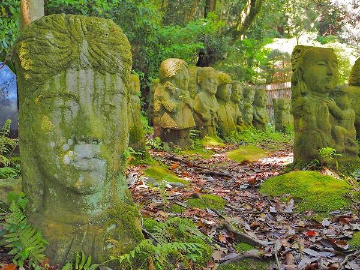
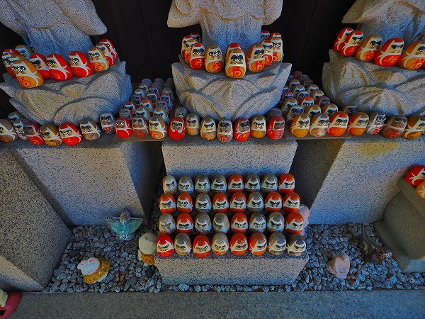

伊豆である。
久し振りに温泉入ったり、美味い魚食ったり、富士山見たりのんびりしようと思って伊豆に来た。
もちろんネタ拾いも抜かりはありませんぜ兄貴。
で、向かったのがこちら。
伊豆の国市にある
願成就院だ。
このお寺、あの
北条家時政が建立した寺で、北条氏の氏寺として息子義時、その息子泰時の時代を経て伽藍が拡大していったという（その後、戦国時代に一旦消失してしまったのだが）。
去年の話で恐縮だがNHKの大河ドラマ「鎌倉殿の十三人」を楽しみに観ていた身としては軽く興奮気味なのである。
そして、この寺にはなんと
運慶の手による仏像が5体もあるのだっ！
運慶の説明とか、別にいいですよね？
「鎌倉殿～」の名シーンなどを思い出しつつ、運慶仏をたっぷり堪能しようというのがこちらのお寺での主なミッションなのだ。
何で東国の辺鄙な所に運慶仏が5体もあるのか、という理由は関連の書籍などを読んでいただくとして、まずは運慶仏を拝ませていただこう。
で、早速5体の仏像が安置されている
大御堂へと歩を進める。
お堂というかコンクリート造の博物館チックな建物だ。
受付に行くと外国人のお坊さんが対応してくれた。
聞けば、このお寺の娘さんと結婚して今は日本人なのだという。
英国から仏門に入り、修行の日々だという。ご苦労様です。
で、運慶仏。
中央に阿弥陀如来、右に毘沙門天、左に不動明王と眷属の矜羯羅童子と制吒迦童子。
五体の運慶仏が異様な圧力を以て見る者に迫って来る。
いずれも文治2年の作。30代中頃の運慶の仏像はその後の力強い作風を予感させるものだった。
特に不動明王の荒々しさは若き運慶の勢いがそのまま作品に投影されたかのよう。
撮影出来なかったので詳しくは
願成就院さんのサイトを御覧ください、
私の無駄な感想よりも為になる説明がされていますので。
さて。
ここからはお寺のサイトにも扱われていないようなハナシです。
というか、当サイト的には
ここからが本題だったりします…。
運慶仏をたっぷり堪能し、「さて、次はどこへ行こうかな…」などと思案していると、ふと参道の端に
石碑のようなものが並んでいるのが目に留まった。
むむむ。
何かの記念碑なのかな、と思ってよく見ると…
人物の石像じゃないですか！
しかもかなりイイ感じの。
さらに隣には…
七福神、ですか？
誰なんだ？このかなりいい感じの人達は。
傍らに石碑があった。
それによると、この願成就院、戦後の時期にはかなり荒廃していたとか。
そこに浅草からやって来た人達がここの（運慶作の）仏像の素晴らしさに感動し、講を作り、資金を集め現在の大御堂を建設したんだとか。
これらの石像はその講中の面々なのかも知れない。違うかな。
大御堂の脇には池がある。
その池を進んでいくと…

おわ～。
凄くいっぱいあるじゃないの！
石像の大きさは高さ1ｍほど。
恐らく全部同じサイズの四角い石から削り出されているようだ。
人物像が多いが、中には観音像などもあるので特定の何かを彫っている訳ではないようだ。
四角いままの像もあれば丸彫りにされている像もある。
合掌する女性のお腹に達磨大師なのだろうか？
比較的技術レベルの高い彫像だが、女性と達磨さんのコラボって…チョット恐い。
これは夫婦だろうか。
ラグビー好きな夫と犬好きの妻。
夫の胸のエンブレムはＪＲＦＵ、日本ラグビー協会のもの。協会関係者なのだろうか。
夫婦でシュミ趣味が全く違う辺りが無駄にセレブ感出てて良いですね。
大御堂脇からさらに石段をのぼる。
石段の両脇にも石像が並んでいる。
これも夫婦像だろうか。
奥様の方にだけ妙にリキ入っている辺りが素晴らしい。

石段を上りきるとさらに大量の石像が。
テニスラケットを持った娘さんの像。
楽しそうですね。

陽が当たらないのだろう。どれもが苔むしていて緑色になっている。
見た目はポンチなのに
妙な遺跡感が出ちゃってますね。
背後から見ると奉納年月日や奉納者の氏名が刻まれている（ここではボカしました）。
これも夫婦像？
ただし奥様のお腹から人面瘡みたいな顔が出て来てますけど、大丈夫ですか？
さらに奥に進むと墓地の入り口の斜面にも石像が並んでいる。
そこには作業場があった。
開山八百年記念事業 石彫
五百羅漢制作所 とある。
願成就院の創建が文治5（1189）年なので
平成元（1989）年に始まったことになる。
30数年で随分作りましたなあ。そりゃあ苔で真緑にもなる訳だ。
制作中の石像。ネコ好きなんですね。
作業場の傍らには何だか小難しそうなオジサンの石像が。
赤ん坊、だよね？
結婚式帰りみたいな夫婦。
カメラおじさん。凄く嬉しそう。
中には軍人の石像もあった。
ここにある人物像は生きている人が自分の姿を彫ったものばかりかと思ったが、亡くなった人の供養の為に彫ったものもあるのだろう。

水兵の石像。
合掌のポーズにはどんな意味が込められているのだろう。
おもしろうてやがて悲しき、な石像群であった。

大御堂の前にあった石像。
絶叫しているような表情が印象的だった。
運慶仏を観に来ただけだったのに、思いがけず凄いモノに出会ってしまいました。
境内入ってすぐにある六地蔵。

足元のミニ達磨がキュートだ。